Shirahama, Wakayama: things to do, food and stays
Shirahama · Wakayama
Shirahama
Highlighted on the Wakayama map.
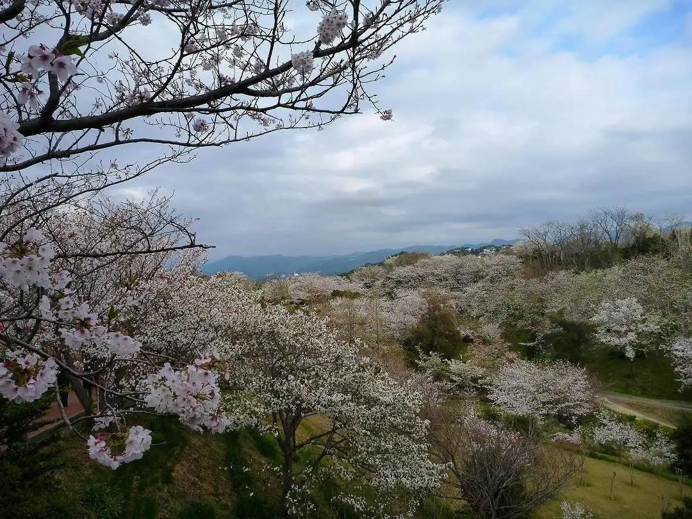
Stay
INFINITO HOTEL&SPA 南紀白浜
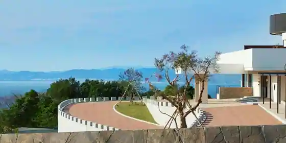
INFINITO HOTEL&SPA Nankishirahama
Inn at Shirahama Onsen in Shirahama.
ホテル川久
Hotel Kawakyu
海絶景とギネス認定の宿 全室露天風呂付離れ XYZスペチアーレ
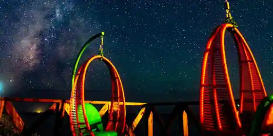
Umi Zekkei To Ginesu Nintei No Yado Zenshitsu Rotenburo Tsuki Hanare XYZ Supechiare
Inn at Nozekkeitogokujo Onsen in Tsubaki, Shirahama with open-air baths and scenic views.
白良荘グランドホテル
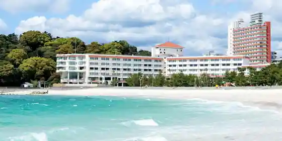
Shiro Ryo So Grand Hotel
Inn in Shirahama with family-friendly stays.
浜千鳥の湯 海舟（共立リゾート）
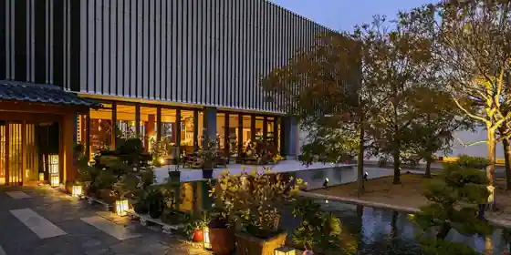
Hamachidori No Yu Kaishu (Kyoritsu Resort)
白浜古賀の井リゾート＆スパ
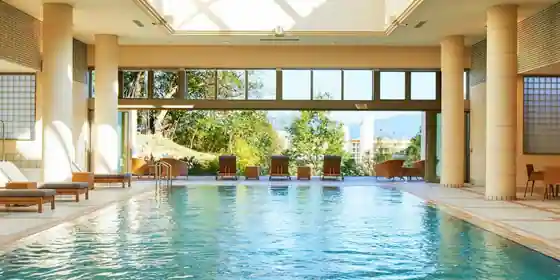
Shirahama Koga No I Resort & Supa
ホテル三楽荘
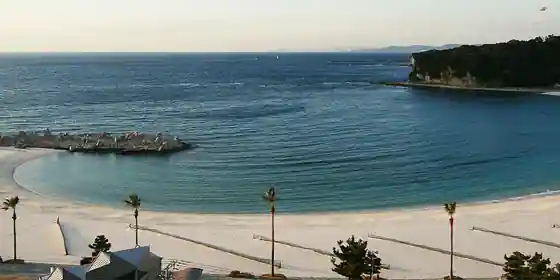
Hotel Sanraku So
ブランシェット南紀白浜
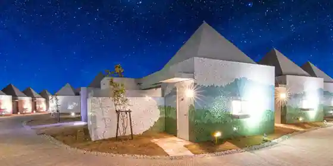
Buranshietto Nankishirahama
SHIRAHAMA KEY TERRACE HOTEL SEAMORE ホテルシーモア
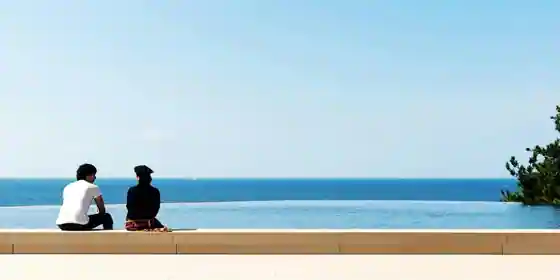
SHIRAHAMA KEY TERRACE HOTEL SEAMORE Hotel Shimoa
Hotel in Shirahama with scenic views.
クリスタルヴィラ白浜パークサイド
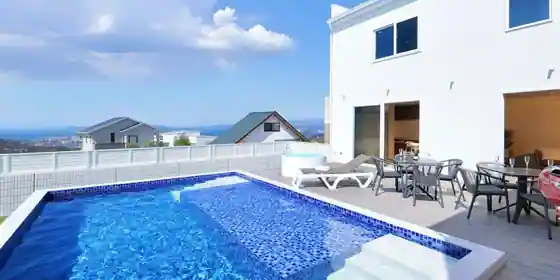
Kurisutaru Villa Shirahama Park Saido
EZRA VILLA ~SHIRAHAMA~
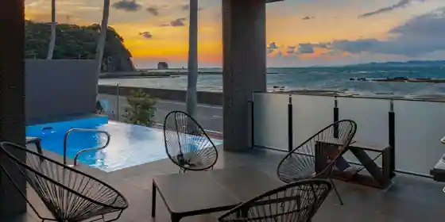
EZRA VILLA ~SHIRAHAMA~
クリスタルヴィラ白浜
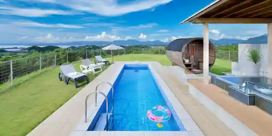
Kurisutaru Villa Shirahama
Dining
珊瑚礁
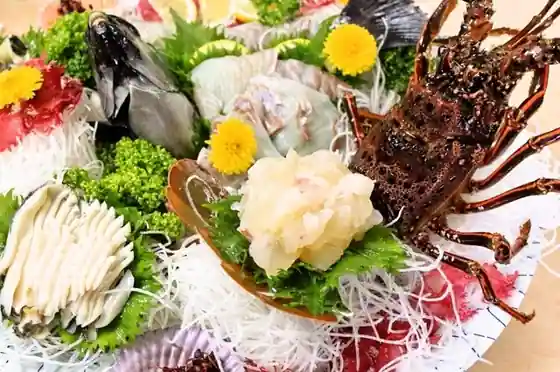
Sangosho
ペスカトーレ
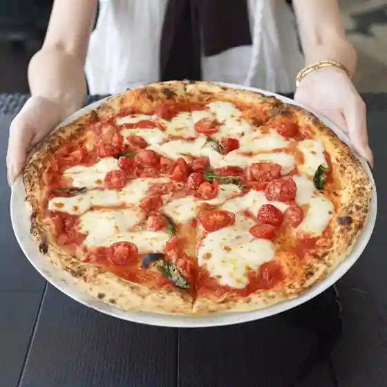
Pesukatore
ミルク＆ビアホール九十九
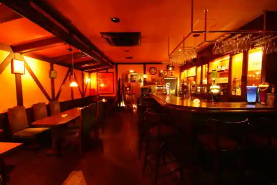
Miruku & Biahoru Tsukumo
品品香
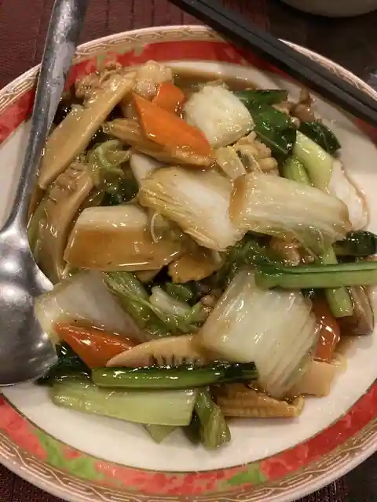
Shinajina Kaori
福菱 Kagerou Cafe
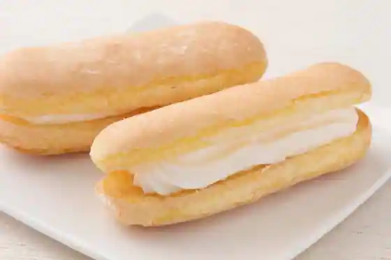
Fuku Hishi Kagerou Cafe
翆陽 エクシブ白浜
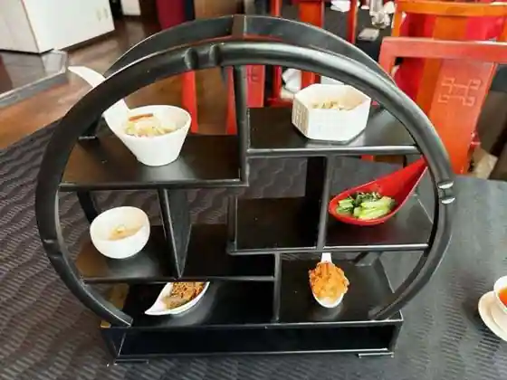
Sui Yo Ekushibu Shirahama
restaurant SAKAKURA
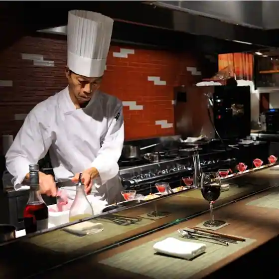
restaurant SAKAKURA
神島
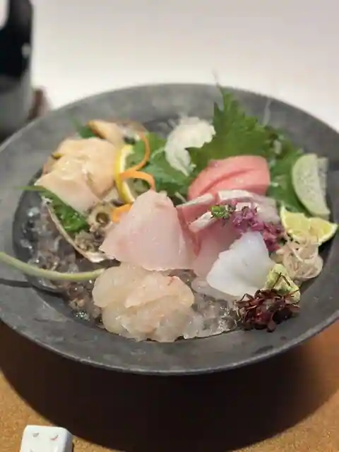
Kamishima
長久酒場
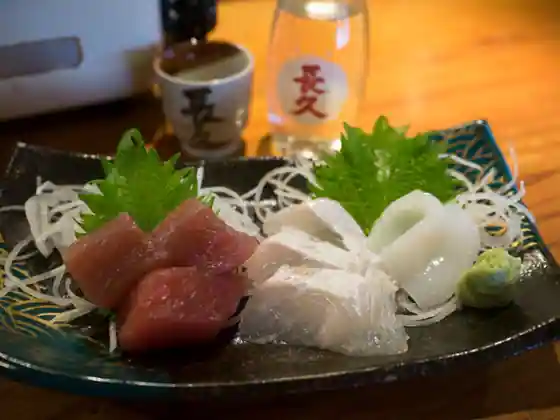
Chokyu Sakaba
御料理 竹寳
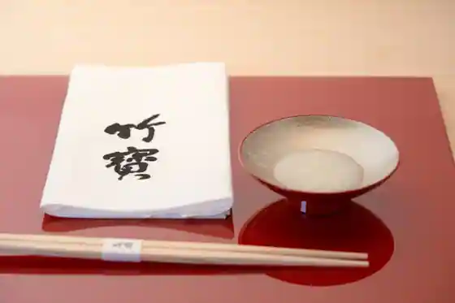
Goryo Ri Chikuho
白浜 kappou kawanishi
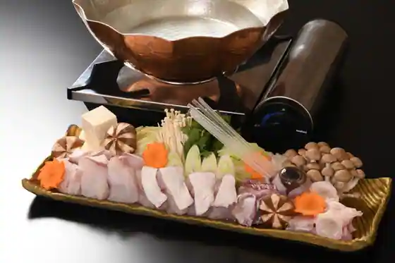
Shirahama kappou kawanishi
やまのうち
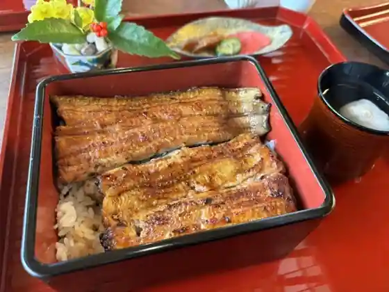
Yamanochi
旬菓庵かどや とれとれ市場店
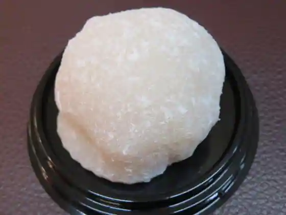
Jun Ka Iori Kadoya Toretore Shijo
幸鮨
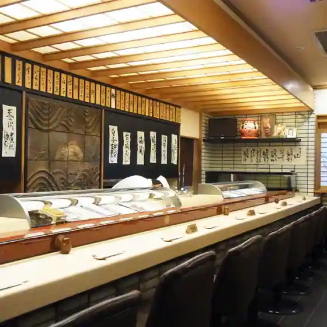
Sachi Sushi
ラペール
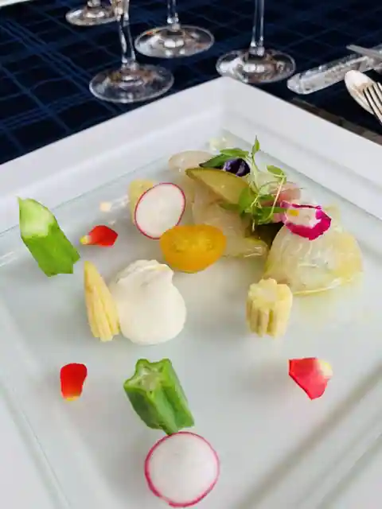
Raperu
BLUE BAR & RESTAURANT
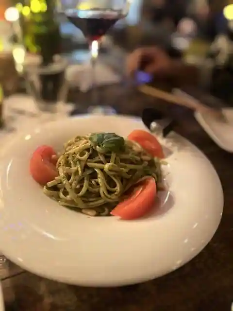
BLUE BAR & RESTAURANT
303
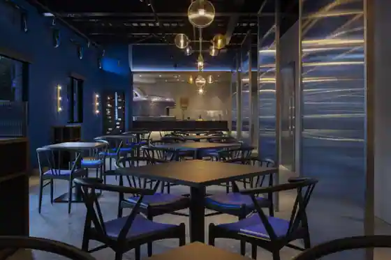
303
和心ダイニング 花むすび
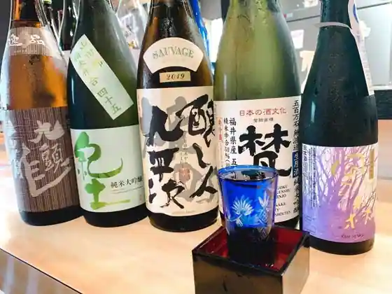
Wa Kokoro Dining Hana Musubi
中華そば 丸田屋 南紀白浜店
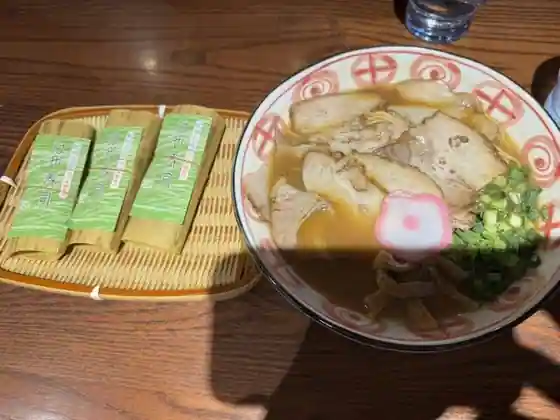
Chuka Soba Maruta Ya Nankishirahama
とれとれ横丁
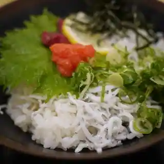
Toretore Yokocho
海鮮寿司とれとれ市場
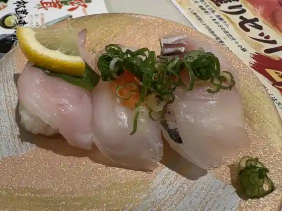
Kaisen Sushi Toretore Shijo
テッティー ベーカリーアンドカフェ
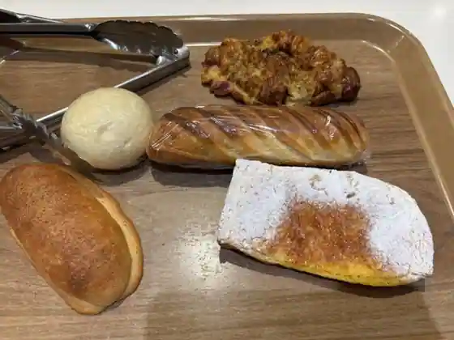
Tettei Bakery Ando Cafe
福梅本舗 和歌山本店
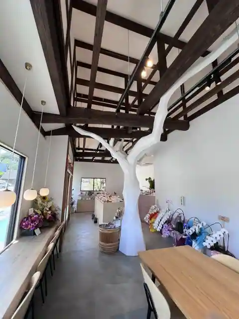
Fuku Umemoto Ho Wakayama Hon
喜楽
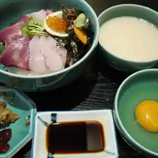
Kiraku
Sights
Senjojiki
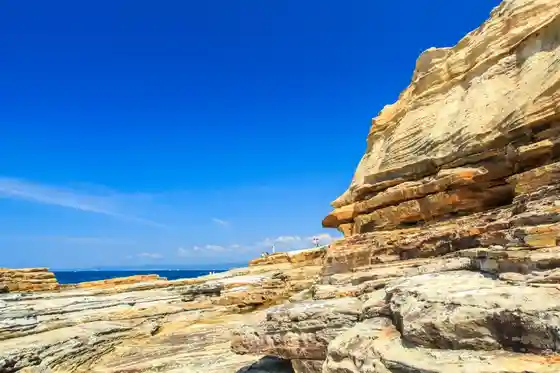
Adobenchawarudo
Toretore Market
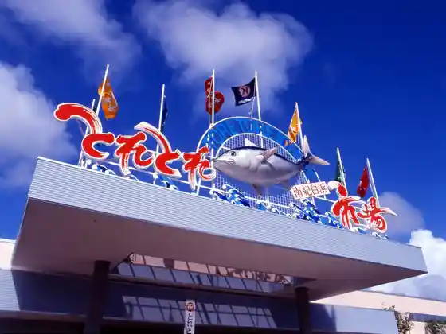
Shiro Ryo Hama
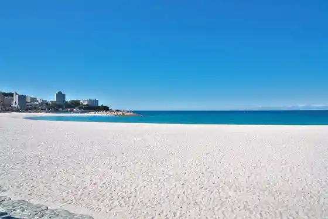
Saki Baths
Engetsu Shima
Sandan Kabe
Shirahama Enerugii Land
Kyotodaigaku Shirahama Aquarium
Fisshamanzu Wafu Shirahama
Hirakusa Hara Park
Ebine Onsen
Kishu Shirahama Onsen Musashi
Minakatakumagusu Memorial Museum
Kazoku Tosugosu Shirahama no Yado Yanagi Ya
Shirahama Art Museum